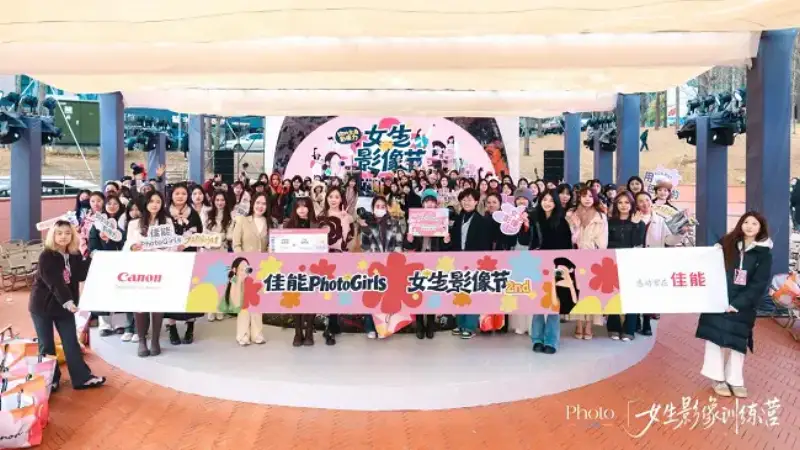
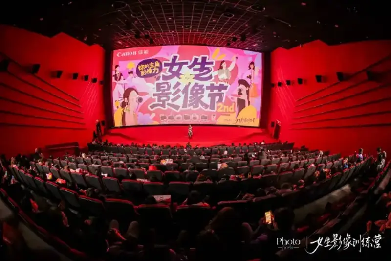
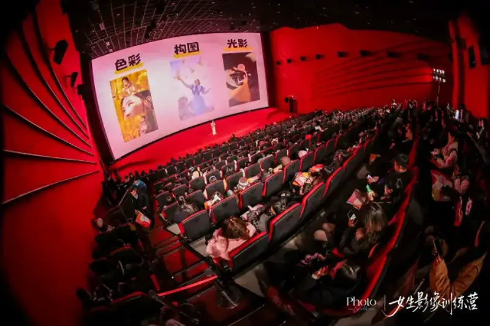
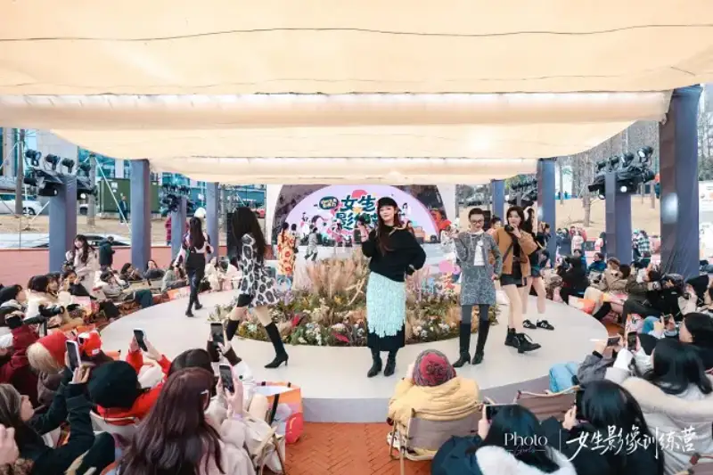
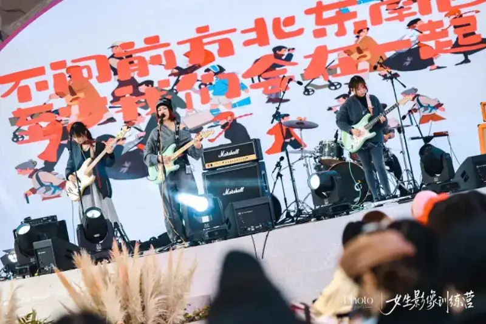
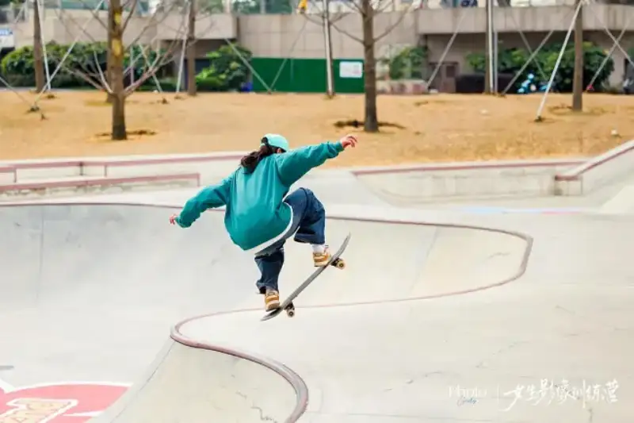
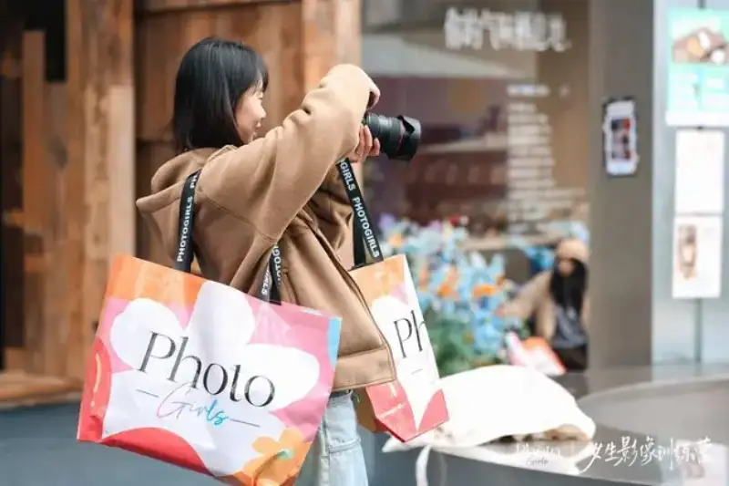

As the female lens moves from being the object of the gaze to self-expression, images are becoming their most vivid declaration of identity. They are also a key way to express themselves and record life. Following this trend, Canon built a community and brand for women image creators, called Canon PhotoGirls, and has developed it over many years. On December 14, the Second Canon PhotoGirls Women's Image Festival closed at the Ayunduo Cang creative park in Guiyang. It was the highlight finale of the 2025 brand events. Three hundred local women creators from Guiyang gathered together. They submitted work online and on site under the theme Your Leading Image Power. They used the lens to write image stories that belong to women, and brought the year of community events to a satisfying close.

Building a Dedicated Space to Help Women Creators Grow Together
The Canon PhotoGirls Women's Image Training Camp grew from a deep look at what women creators need. Zhang Ying of the Canon marketing department is the head of the community. She shared on site: “Canon has long worked to build up the women's community. We want to give girls who love taking photos a space that is truly their own.” She said the core purpose of the camp is to give women creators resources such as dedicated photography courses and outdoor shooting events. They can freely exchange shooting tips and share the joy of creation. More importantly, photography builds emotional ties, so members become friends who encourage each other and grow together.

This purpose ran through the whole 2025 PhotoGirls program. Canon built an online learning platform through its official Xiaohongshu account. It used course sharing, open calls for work, and point rewards to keep encouraging women photographers. After a full year, five outstanding creators stood out for their strong work and won a place on the 2025 annual group journey. At the festival, a direct-to-group contest was held on site. The final winner took the last spot on the 2025 annual group journey.
The winner will meet industry mentors face to face, join themed creative outings, get professional development of the work, and be shown and promoted on the official platform. Together with the five creators chosen earlier, they will start a shared creative journey. This is an important close to the annual selection of the women's image training camp.
▲The annual group roster is revealed, and the moment of honor is shared
Diverse Events Spark Creative Energy and Capture Women at Their Best
As the annual celebration, the on-site events took many forms and made the theme Your Leading Image Power come alive. In the image salon, the well-known photographer Wei Lan gave a practical talk. From the use of light and shadow to the capture of emotion, she showed women photographers at all levels how to move forward in portrait photography. A multi-scene shooting area worked with several shops at Ayunduo Cang. It built literary, trendy, and other shooting settings, paired with popular Canon EOS bodies and lenses. People could try them freely and create with ease, and sharpen their skills in practice.

To encourage girls to explore many shooting settings and meet different creative needs, every part of the event had its highlights. Canon worked with Marimekko, the Finnish premium design brand, to create a themed runway show. The show was not only a stage to display products. It became a living creative lab. Models and the audience below photographed each other, and felt the freedom and joy of creation. At the same time, Canon invited HangOut, an all-women band from Guizhou, to perform. The driving sound of guitar and bass answered the visual language of the creators in a remarkable way. It built a warm, lively mood. It also carried the mutual support and encouragement between women, and stirred up their creative inspiration.

▲PhotoGirls take the stage with confidence in an image fashion show

▲The local all-women band HangOut plays on, singing out creative energy

▲ A female skater opens the show with a leap, freezing a dynamic moment

▲Trendy shops in the park join to become a photo playground, meeting inspiration around the corner

▲Women photographers compete with passion, the shutter sounds the opening note of contest
A Promising Future: Going Deep in Women's Imaging and Expanding the Bounds of Growth
Looking ahead to 2026, the Canon PhotoGirls Women's Image Training Camp will keep building the ecosystem of tools, platform, and community. The brand plans to bring core events such as the themed image festival to more new first-tier cities, so more women creators can feel the warmth of the community. At the same time, it will enrich the camp with new formats. It will offer mentor pairing and work development as professional support. It will cover Vlog creation, street photography, travel documentary, and other tracks, to meet the growth needs of creators at all levels.
The meaning of images is to let every unique soul be seen. The close of the Second Canon PhotoGirls Women's Image Festival is a summary of a year of growth. It is also the start of a new journey. Canon invites all women who love life and creation to join the community and enter the women's image training camp. Discover yourself and express yourself under the lens. Together with thousands of like-minded people, grow and move forward in the world of images, and write more leading stories of their own.